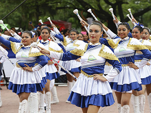
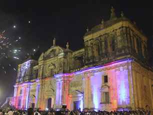

9 Lugares
Turísticos
Visita estos increíbles lugares y llénate de adrenalina al recorrerlos.
Reserva Natural Volcán Mombacho
Granada#1 La belleza de sus paisajes y la riqueza de su flora y fauna hacen de este lugar un sitio único, que además cuenta con un clima muy agradable. El volcán cuenta con una altura de 1 mil 500 metros sobre el nivel del mar.

Volcán Masaya
Masaya #2 El volcán Masaya es uno de los principales atractivos turísticos de Nicaragua, está activo y recibe miles de visitantes de todo el mundo, en el horario diurno la visita cuesta 100 córdobas extranjeros y 30 para nacionales. Es uno de los volcanes más activo de la cadena de fuego, cuenta con un lago de lava que impresiona y puede ser visto a simple vista.
Laguna de Apoyo
Granada#3 En el 2018, la Laguna de Apoyo, fue calificada por National Geographic, como uno de los lugares más bellos para bañarse en todo el mundo. Esta laguna se encuentra en el centro de la cadena volcánica que atraviesa Nicaragua. La Laguna de Apoyo es una de las lagunas más bellas del pequeño país centroamericano, y se encuentra cerca de la ciudad de Granada y del departamento de Masaya.
Isla de Ometepe
Rivas#4 La magia de la Isla de Ometepe te roba el aliento desde que subís al ferry en San Jorge y empezás a admirar la imponente belleza del Gran lago de agua dulce de Nicaragua y de los volcanes Maderas y Concepción. La Isla de Ometepe te ofrece un contacto directo con la madre naturaleza. En este espacio se pueden encontrar insectos, monos, frutas, arena, garzas, jardines botánicos, mariposas, chocoyos, sol, playa, agua cristalina y curativa como el Ojo de Agua.

Cerro Negro
Leon#5 La adrenalina y emoción generada por el deslizamiento en una tabla sobre las faldas del imponente y hermoso Volcán Cerro Negro, es lo que realizan muchos turistas nacionales y extranjeros al visitar este volcán. Una de las maravillas naturales de Nicaragua. ¡Un ecosistema único para los temerarios que decidan lanzarse, a más de 80 km/hora! El sandboarding sobre un volcán activo, es un deporte extremo que se práctica solamente en Nicaragua.

San Juan del Sur
Rivas#6 En el pacífico de Nicaragua se encuentra la espectacular bahía de San Juan del Sur, un destino turístico que es reconocido a nivel nacional e internacional por su belleza escénica, la calidez de su gente y porque ofrece diferentes alternativas de recreación para sus visitantes. En San Juan del Sur, usted podrá encontrar diferentes propuestas hoteleras, saborear la gastronomía local y disfrutar del sol y las olas en este paraíso terrenal.

Salto de la Estanzuela
Estelí#7 A sólo seis kilómetros del casco urbano de la pujante ciudad de Estelí, el ya bien conocido Salto de la Estanzuela se luce estos días con su caudal renovado por las lluvias recientes. Bajar al punto es una tarea relativamente sencilla. Se tiene que recorrer alrededor de un kilometro ligeramente empinado y la mayoría de este se puede hacer en vehículo, aunque se recomienda que sea un 4x4.

Cañón de Somoto
Madriz#8 El espectacular Cañón es uno de los sitios en Nicaragua que ofrece un escenario único en el que se conjuga el entretenimiento y la apreciación de nuestros recursos naturales, que sin duda alguna genera satisfacción a los amantes de la naturaleza. El Cañón de Somoto tiene una extensión de tres kilómetros, y en su recorrido acuático se puede apreciar la flora del lugar, principalmente orquídeas, que se exponen en los impresionantes farallones, que se levantan a ambos lados.
Little Corn Island
Zelaya#9 Sus arenas blancas, aguas color turquesa, hacen de este un paradisíaco lugar, las bondades naturales con la que goza esta isla es catalogada por tener las mejores playas de Nicaragua. Las Islas del Maíz, formadas por Corn Island y Little Corn Island, resultan un verdadero destino vacacional para cualquier turista nacional e internacional.
Galería de
Imágenes
Praesent pellentesque efficitur magna,
sed pellentesque neque malesuada vitae.
{kind=link}
{kind=link}
{kind=link}
{kind=link}
{kind=link}
Los lugares bellos de Nicaragua.
Nicaragua tierra de lagos y volcanes y en este video te mostrare los lugares mas turisticos de Nicaragua, entre ellos se destacan la ciudad de Leon, El Cañon de Somoto, Chinandega, Granda, Masaya, entre otros.
Si aun no sabes que lugar visitar mira este video, encontraras el lugar perfecto para visitar con tu familia en las vacaciones.
Fechas
Ideales
Mira la mejor época del año para visitar estos lugares, agenda y programa con tiempo tus próximas vacaciones y aprovecha para disfrutar las celebraciones Nicaragüenses.
-
Semana Santa
Feriado jueves y viernesLa celebración de la Semana Santa en Nicaragua es una de las festividades más importantes en ese país de tradición católica. La conquista española difundió el catolicismo de mano de los misioneros franciscanos y dominicos que se impuso sobre las religiones indígenas. Aun así, el sincretismo religioso de América marcó profundamente las costumbres del pueblo nicaragüense. Si bien la Semana Santa se celebra en todas las ciudades, las festividades más destacadas son las de Granada y León, capitales turísticas, importantes por su arquitectura colonial, gran cantidad de iglesias de estilo neoclásico y barroco y un abundante patrimonio de imágenes sacras.
-
-

Sed at massa turpis
30 June 2018Nam vel egestas nisi. Nullam lobortis magna at enim venenatis luctus. Nam finibus, mauris eu dictum iaculis, dolor tortor cursus quam, in volutpat augue lectus sed magna. Integer mollis lorem quis ipsum maximus finibus.
-

Independencia de Nicaragua
Feriado 14 y 15Se denomina Independencia de Centroamérica a la conmemoración, por parte de los actuales países de Guatemala, Honduras, El Salvador, Nicaragua y Costa Rica, de la firma del Acta de Independencia de América Central el 15 de septiembre de 1821. Tal Capitanía estaba conformada, en ese entonces, por las provincias de Guatemala, Chiapas, Comayagua, San Salvador, Nicaragua y Costa Rica. La suscripción del documento trajo como consecuencia la independencia del Gobierno Español.
-

La gritería
Feriado 8 de Diciembre
La Purísima es una fiesta a la Virgen María que se celebra entre el 28 de noviembre y el 8 de diciembre. El 7 es la culminación, con La Gritería. Es la fiesta más popular del año para la mayoría de los nicaragüenses. Esta fiesta religiosa nacional se celebra en todos los pueblos y ciudades de Nicaragua teniendo especial relevancia en las ciudad de León, donde se originó.
-
Contáctanos
+Dinos que piensas
Si tienes alguna duda o te gustaría dejar un comentario háznoslo llegar.